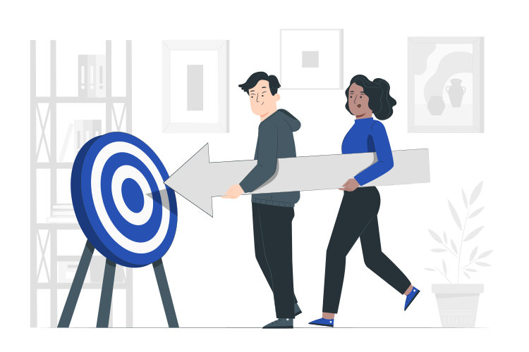

Mapeamento Sistemático da Literatura
Magnam dolores commodi suscipit. Necessitatibus eius consequatur ex aliquid fuga eum quidem. Sit sint consectetur velit. Quisquam quos quisquam cupiditate. Et nemo qui impedit suscipit alias ea. Quia fugiat sit in iste officiis commodi quidem hic quas.

Objetivo
O objetivo do Mapemanto Sistemático foi realizar uma análise abrangente da literatura para identificar as citações de Métricas de Código-Fonte, suas classificações, assim como os fatores de qualidade e de melhoria relacionados na sua adoção.

Questões de Pesquisa
- QP1: Quais as principais classificações quanto ao uso das Métricas de Código-Fonte?
- QP2: Quais são as principais Métricas de Código-Fonte?
- QP3: Em quais fatores da qualidade de software as Métricas de Código-Fonte auxiliam?
- QP4: Quais são os fatores de melhoria quando se usa Métricas de Código-Fonte?
Fontes de Busca
Para a obtenção de publicações relevantes, foram realizadas buscas manuais e automáticas.
- Buscas Manuais: o Simpósio Brasileiro de Sistemas de Informação (SBSI), o Simpósio Brasileiro de Qualidade de Software (SBQS) e o Simpósio Brasileiro de Engenharia de Software (SBES).
- Buscas Automáticas: Periódico da Fundação Coordenação de Aperfeiçoamento de Pessoal de Nível Superior (CAPES), Scopus e Google Acadêmico.